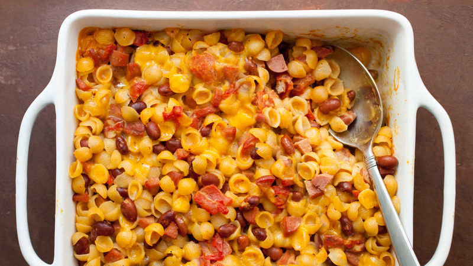

Chili Dog Mac and Cheese Recipe
The breakfast of champions!

This unique dish is what seperates the sheep from the wolves.
"This is what I eat on a daily basis"-Lebron James
Ingrediants
- 1 tablespoon olive oil
- 1 pound ground beef
- 1 large onion, diced
- and more stuff
Instructions
- Add olive oil to a large pot and place over high heat. Add beef; cook and stir, breaking up with a spoon or spatula, about 2 minutes. Add onions and salt, and cook, stirring, until beef is crumbly, and onions turn translucent, about 5 minutes.
- Once chili is nearly ready, fill a large pot with lightly salted water and bring to a rolling boil. Stir in macaroni and return to a boil. Cook pasta uncovered, stirring occasionally, 1 minute less than specified in package directions, until not quite tender, and still firm to the bite, about 8 to 11 minutes.
- Bake in the preheated oven until bubbly, 30 to 35 minutes. Let rest 15 minutes before serving, topped with green onions